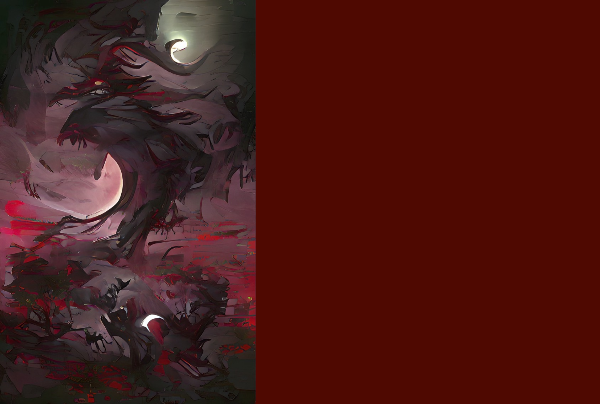

Moon's Feral Call
A spirit of transformation and the beast that lurks in the hearts of men. The Invaders call it a curse or a disease, but the Dahan consider it a gift bestowed upon a rare few. The Call has been heard more often since the Invaders’ arrival, especially when the moon is high and full, and it no longer distinguishes between Dahan and Invader. Some believe this increased frequency reflects the spirit’s desire to understand the new presence on the island, while others suspect the spirit’s true motive is to trap the Invaders in beastly form, stealing memories of their previous lives, and thus remove them as a threat.
SETUP:
Put 1 {presence} and 1 {beast} on your starting board in the highest-numbered land with the most {dahan}.
Play Style:
Transforms Dahan and Invaders into Beasts and vice versa. Excels at preventing Builds by transforming stray Explorers; however, care must be taken to avoid destroying too much of its own presence. Leans more toward control and fear generation than outright damage to Invaders.